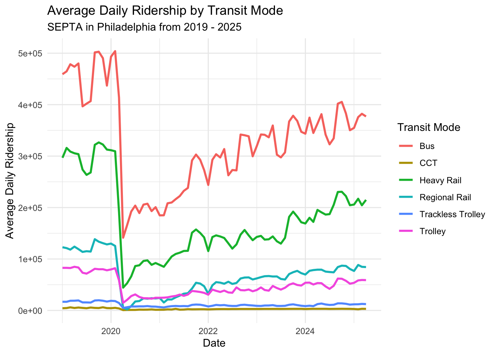
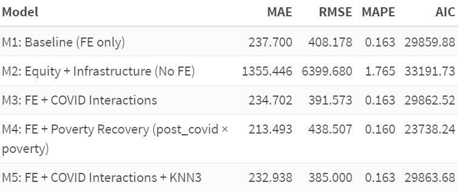

Predicting Post-COVID Bus Ridership in Philadelphia
MUSA 5080 · Final Project
Jack Bader, Same Sen, Joey Cahill
2025-12-08
Predicting Transit Recovery to Support Equitable Bus Service
- Policy question: How can SEPTA prioritize service & shelter investments post-COVID?
- Outcome: Weekday bus ridership by census tract (2017–2023)
- Goal: Provide a predictive tool for:
- Prioritizing neighborhoods for service restoration
- Targeting investments in high-poverty, transit-dependent areas
The Policy Problem
Why does this matter?
COVID drastically altered travel behavior
SEPTA faces difficult decisions:
- Where to restore service?
- Where to place shelters?
High-poverty, transit-dependent tracts risk being left behind
Decision our model informs:
Which tracts should SEPTA prioritize for additional service and shelter investments in 2024-2025?
Data & Spatial Unit
The “Secret Ingredient” + Enhancements
Primary dataset: SEPTA Bus Ridership (APC), by tract, 2017–2023
Spatial unit: Census tracts (static)
Additional data sources:
ACS poverty, vehicle access, population density
Bus stop and shelter inventory
Distance to rail
Indego bike share KNN-3 distance
Average Daily Ridership by Transit Mode

Exploratory Data Analysis
Key EDA Insights
- Severe shock in 2019 → 2021: ~60% drop in ridership
- Uneven recovery in 2021 → 2023: some tracts recovered faster
- Spatial variation in:
- Ridership levels
- Shelter coverage
- Poverty, vehicle availability
Exploratory Data Analysis (cont.)
EDA informed modeling decisions:
Predict counts → Poisson / Negative Binomial
Include tract fixed effects
Add equity-focused interactions
Modeling Strategy
- Outcome: total weekday ridership (count)
- Models tested:
- Poisson (overdispersed)
- Negative Binomial (final)
- Features included:
- Trend, post_covid
- % poverty, % no vehicle, population density
- Stop/shelter density
- Distance to rail
- KNN-3 Indego distance
- Fixed effects for tracts
- Equity interactions
Train/Test Design
How we validated
- Train: 2017–2019 (pre-COVID) and 2021–2022 (recovery)
- Test: 2023 (true held-out year)
Validation metrics: - Mean Absolute Error (MAE) - Root Mean Squared Error (RMSE) - Mean Absolute Percentage Error(MAPE) - Akaike Information Criterion (AIC)

Key Findings: What the Model Tells Us
1. Fixed Effects Are Essential
- Without tract FE: MAE = 1,355 (high)
- With tract FE: MAE = 214-238 (good)
- Unobserved tract characteristics significantly impact ridership
2. Recovery Varies by Poverty
- High-poverty tracts show slightly larger post-COVID drop
- Suggests differential recovery needs by poverty level
3. Shelter Effects Depend on Context
- Shelters associated with higher ridership overall, but this relationship is much weaker in high-poverty tracts … Why?
Interpreting Model 4 Coefficients: Main Effects (on log scale)
trend = 0.21: Each year → ~21% growth (baseline trend)post_covid = -1.13: Post-COVID period → ~68% drop from trendpct_poverty = 346.90: Higher poverty → much higher baseline ridership (transit dependence)pct_no_vehicle = 61.94: No vehicle → higher ridershippct_sheltered = 85.09: More shelters → higher ridership
Interpreting Model 4 Coefficients:Key Interactions (on log scale)
post_covid:pct_poverty = -0.10:
High-poverty tracts had slightly larger post-COVID drop
poverty_x_sheltered = -14,768:
Shelter effect is much weaker in high-poverty areas which suggests shelters work differently in high-poverty contexts
Interpretation:
The model captures that recovery patterns and infrastructure effects vary by neighborhood context.
Equity & Error Patterns
Understanding error distributions
Questions explored:
- Does the model underpredict high-poverty tracts?
- Are errors spatially clustered?
- Is the model equitable in practice?
Spatial Error Diagnostics
Insight:
Some high-need neighborhoods were consistently underpredicted → equity implications.
Policy Recommendations
How the City Should Use the Model
- Prioritize underpredicted, high-poverty tracts for restoration
- Identify “fragile” tracts with weak recovery
- Use model as a screening tool, not the final decision-maker
- Update annually with new APC + ACS
- Pair predictions with community input
Limitations
Limitations
- Data issues: APC quality, ACS lag, spatial autocorrelation (Moran’s I = 0.145)
- Time period: 2021-2023 combines drop + recovery into one period
- Behavioral changes: WFH patterns not captured
What the Model Cannot Do
- Causal inference: Why do shelters matter less in high-poverty areas?
- Recovery speed: Can’t separate initial drop from recovery rate
- Optimal policies: Predicts outcomes, doesn’t prescribe solutions
Key point: Model is a prediction tool, not a causal analysis tool.
Ethical Concerns & Safeguards
Ethical Concerns
- Underpredicting marginalized areas risks disinvestment
- Existing inequities may be reinforced
Safeguards
- Annual fairness audits
- Community engagement required
- “Do no harm” rule for high-poverty tracts
- Use as screening tool, not final decision-maker
Implementation & Next Steps
How SEPTA Can Use This
- Forecast ridership for planning and budgeting
- Dashboard for planners
- Integrate with stop-level redesign efforts
Future improvements: - Monthly data
- Weather & job center integration
- Spatial lag/error models